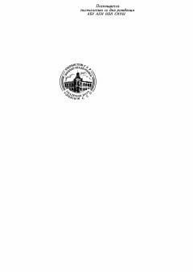

TQAbu Ali ibn Sinoning tibbiyot faniga oid fundamental asarining birinchi qismi.
Abu Ali ibn Sinoning mashhur 'Tib qonunlari' asarining birinchi jildi bo'lib, unda tibbiyot fanining asoslari va nazariy qoidalari bayon etilgan. Ushbu fundamental asar inson salomatligini saqlash va kasalliklarni davolash bo'yicha o'rta asrlar tibbiyotining eng yuksak cho'qqisi hisoblanadi.